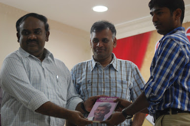
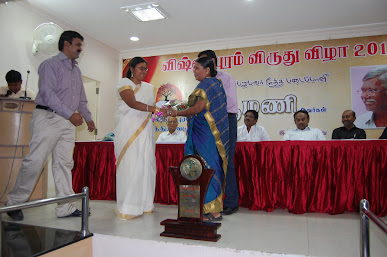
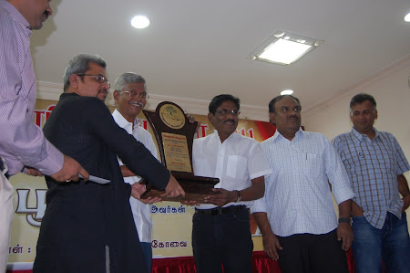
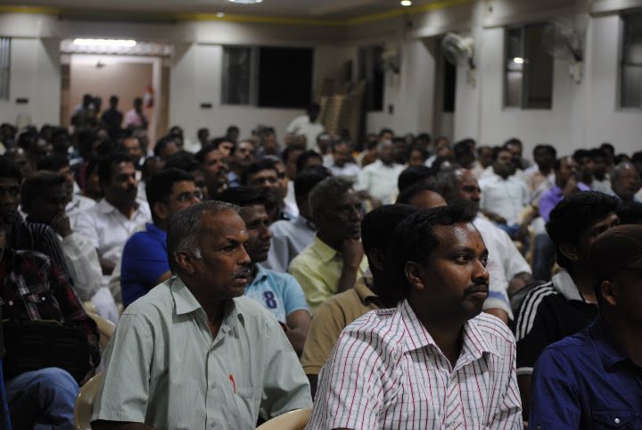
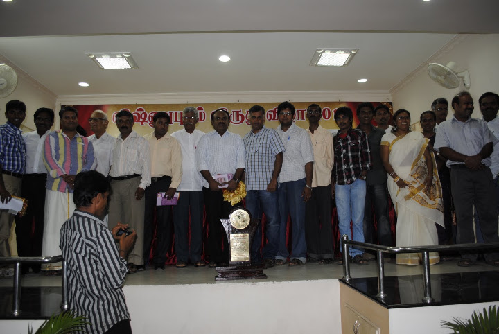

Living Tamil Association for World Literature (LTAWL)
The 2011 Vishnupuram Literary Circle Award was presented to the novelist Poomani in Coimbatore — a ceremony that began as a modest visit among friends and, almost by accident, swelled into a three-day literary festival — translated and adapted from the original Tamil account.
Poomani received the Vishnupuram Literary Circle Award for 2011, in recognition of a body of fiction that had, by then, spanned decades. Writing from within the Arunthathiyar community and the hard, dry farmland of the Kovilpatti region, Poomani built a reputation as one of the central figures of Tamil naturalist writing, with novels such as Piragu and Vekkai and the story collection Reethi. In an accompanying essay, “Pookkum Karuvelam” (“The Flowering Karuvelam”) — its title borrowed from the thorny, drought-hardy tree native to that same soil — Jeyamohan describes a writer who treated his fiction strictly as fiction, never letting caste identity or activist politics stand in front of the work itself, and whose spare, unsentimental realism grew out of the land he came from rather than out of any borrowed literary theory.

The occasion had not been planned as anything large. Friends began converging on Coimbatore on the morning of 17 December 2011: S. Ramakrishnan arrived first, and conversation about Poomani's work began almost immediately; Yuvan Chandrasekhar joined that evening. Jeyamohan reached the city close to midnight, having just come from two separate events in Trichy the same day. What was meant to be a quiet stay at the Lee Meridian Hotel turned into a night of literary talk that ran past dawn, as more than thirty people crowded into rooms meant for far fewer, the conversation not breaking up until close to five in the morning.


By the morning of 18 December, still more friends had arrived, including Poomani himself and Bharathiraja, who helped absorb the costs of a gathering that had, by now, plainly outgrown its original scale. The crowd — anticipated at a fraction of the size — reached fifty to sixty people, and organisers split the group between the hotel and the nearby Murugan Hotel to manage the numbers. The formal event was held that evening at Geetha Hall, beginning around six o'clock. Ve. Alex and Prathiba Nandakumar both spoke briefly and pointedly, and Balakrishnan — an IAS officer known for his research into Indus Valley place names — spoke about stories of arama, or righteous conduct, connecting that older tradition to Poomani's own work. Poomani's wife was honoured during the proceedings, visibly moving him. In his own remarks, Poomani returned again and again to his surprise and pleasure at discovering how many young readers had engaged seriously with his fiction — testing each of them, half-teasingly, on whether they had truly read what they claimed to have read.


The gathering did not end with the ceremony. Around twenty-five people stayed on that night, and fifteen of them talked literature until sunrise, at one point moving the conversation to a café near the railway station. The whole of 19 December was spent together in the same way, before the group finally dispersed with an 8:45 evening train out of Coimbatore. Looking back on the three days, Jeyamohan's own verdict was simple: they had, without quite intending to, done something genuinely important — turning a single evening's award ceremony into an extended, unplanned festival of reading and friendship built entirely around one writer's life's work.

Translated and condensed from the original Tamil accounts: jeyamohan.in/23330 and jeyamohan.in/106